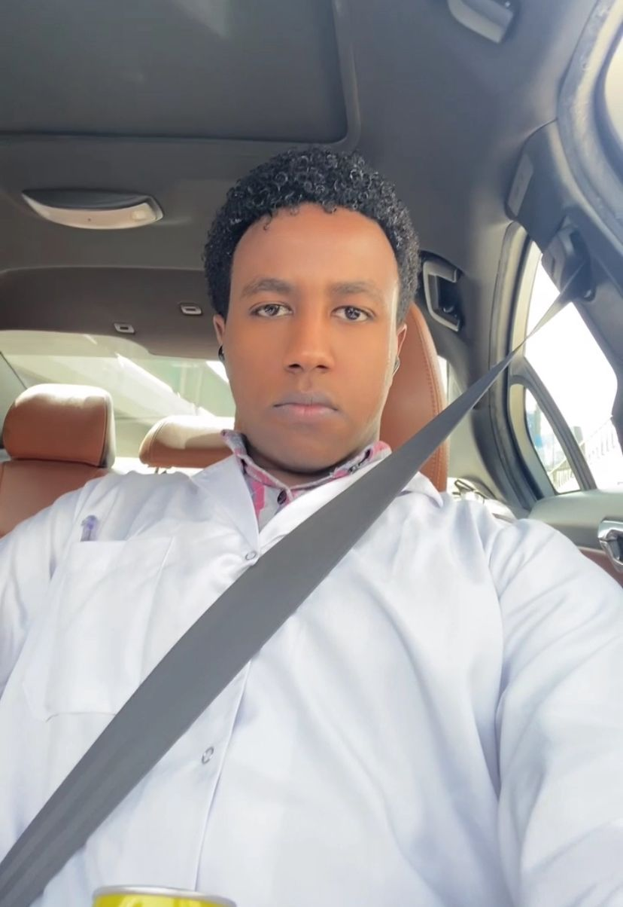

Cranial nerves
Presentation material using diagrams and clinical examples to explain function and assessment.
Personal academic profile
Medical student with an interest in clear teaching, useful presentations, and accessible health education.

About
I am a medical student interested in explaining clinical and scientific ideas clearly. My work has included tutoring, preparing presentations, and creating study materials for fellow learners.
I value careful sources, plain language, and practical formats that help people learn. This page brings together my academic interests and ways to contact me.
Academic work
Selected study materials and presentation topics from my existing portfolio.
Presentation material using diagrams and clinical examples to explain function and assessment.
An evidence based presentation structured around mechanisms, risk, and clinical relevance.
Questions and rhythm strip practice designed to strengthen pattern recognition.
Curriculum vitae
Download the Word document for education, skills, and relevant work.
Contact
For academic collaboration, education, or professional enquiries, use the channel that suits you.